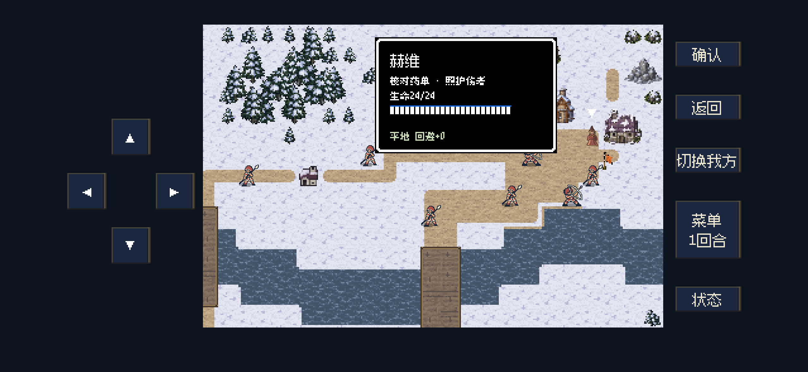
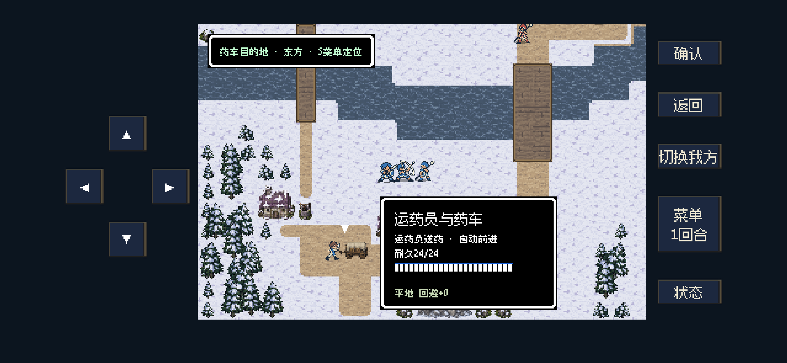
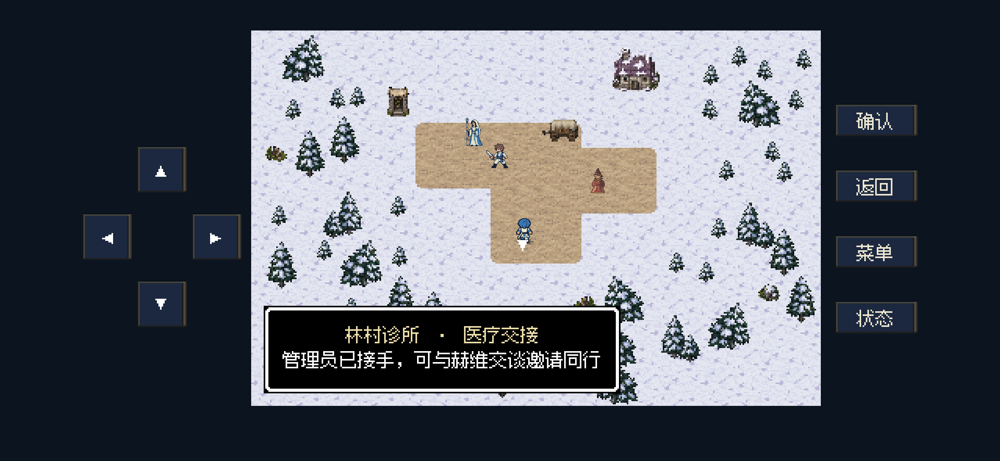

诊所送药 · 岗位、运输与交接
赫维留在诊所核对药单、照护伤者，运输员带药车过桥；送药获胜并完成医疗交接后，由玩家邀请赫维同行。
修改依据与验证范围（Markdown表格） · 职责／兼容检查 · 旧图清理记录 · 角色重绘对照页
通关与接续结果
当前S12以正常菜单、移动和战斗操作，第10回合获胜，共494次按键；药车已交付，管理员交接、赫维主动邀请和返回世界地图均走通。查看完整操作记录。
52项职责／兼容检查及最终11项呈现检查通过。补跑的旧0.3.9装备套件有13项过期断言失败，已在修改依据中列明，未宣称全量回归通过。
以下为iPhone 16尺寸的后台视口画面，使用独立布局夹具；未访问、安装或更新iPhone。仅保留三张最终画面，未重复全五章。
赫维在诊所承担明确职责
新版术法师在诊所侧院留守，角色卡显示“核对药单 · 照护伤者”。访问入口和药车交付点保持畅通，生命条采用友军样式。

新版运输员与药车同行
采用重绘页的新版村兵待机和四向行走图。人物与药车同步移动，仍是一个护送目标；敌人靠近时等候，清路后自动前进。

完成交接，再邀请赫维
诊所保留送达的药车与运输员。管理员、赫维、运输员都使用新版职业图；完成交接后显示邀请提示，不自动加入队伍。

旧图来自 actual/assets/party-0.7.0/civilian/。三张旧运行图及对应导入文件、缓存已清理；原作对照源图保留用于验收。最终素材记录